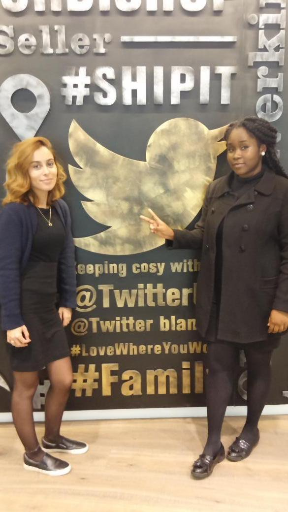

This is a brief but detailed, online Curriculum Vitae - explaining, a bit about me, What educational impacts I've made and also what stage of education I am currently at. As you read more and browse my CV you will come across a contact page, if you would like to contact me. Thank you